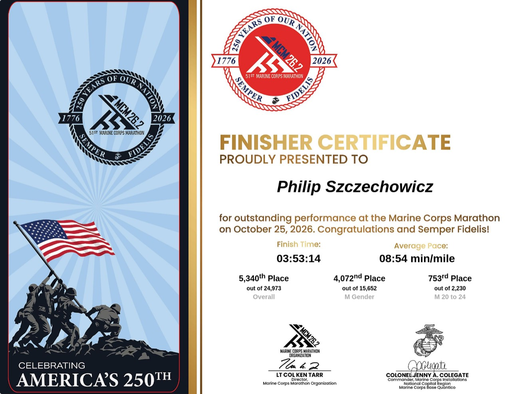

Running & riding
Races & finish lines.
A record of the challenges I’ve taken on, with the routes and pacing behind each finish.
Official results for the DC District Challenge and Marine Corps Marathon. BellRinger timing and route charts use Garmin recordings.
September 19–20, 2026
DC District Challenge
The District Challenge: a 5K on Saturday and a half marathon on Sunday.
October 24–25, 2026
A ride, then a marathon
BellRinger moments
